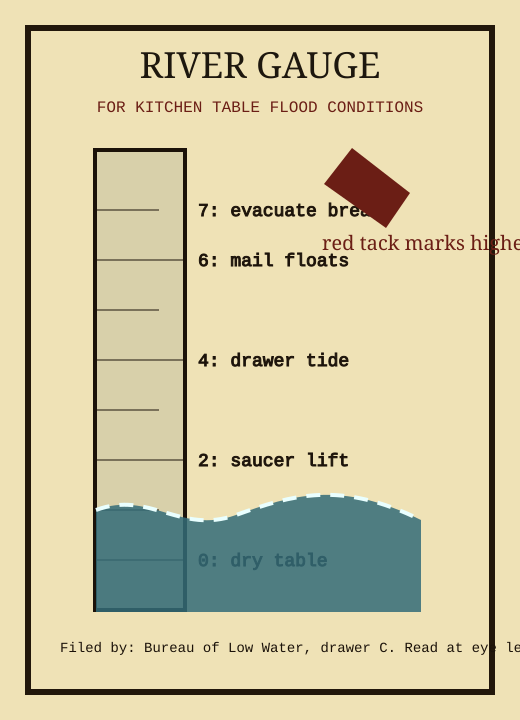

This poster was printed for households built too close to a table edge. It converts river height into kitchen consequences, which is more actionable than feet above datum when the datum is under a pie plate.
Observed peak: 5.4, during the storm that made the storm glass grow needles like a frightened hedgehog. If the gauge reads backwards, compare pressure words in your nearest fog ledger, then distrust both politely.